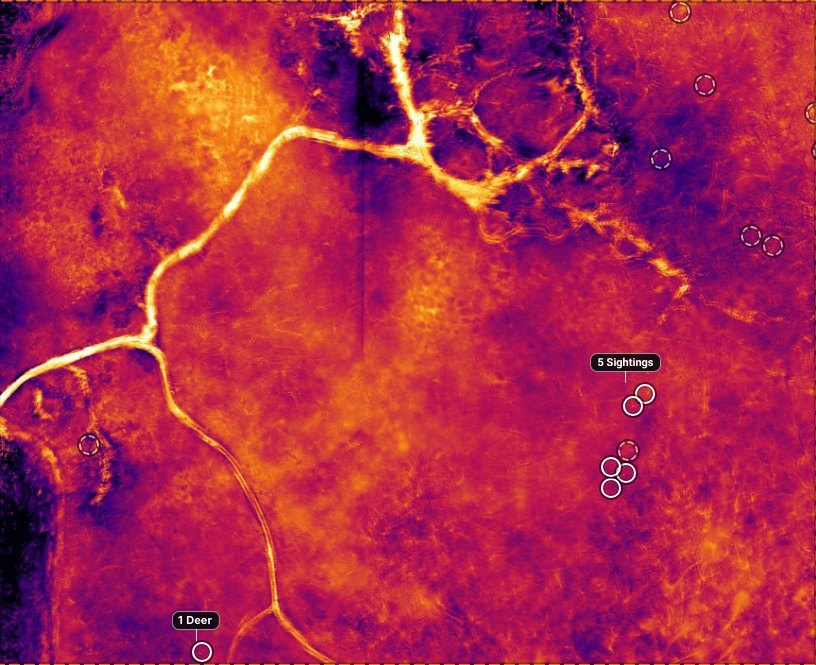
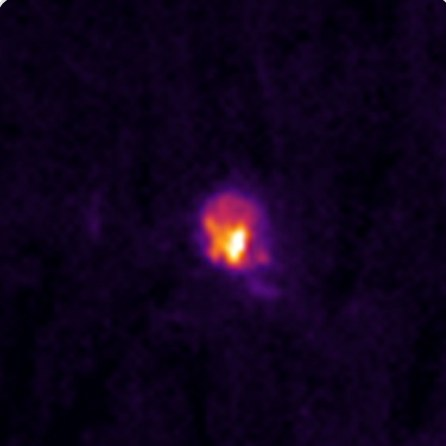
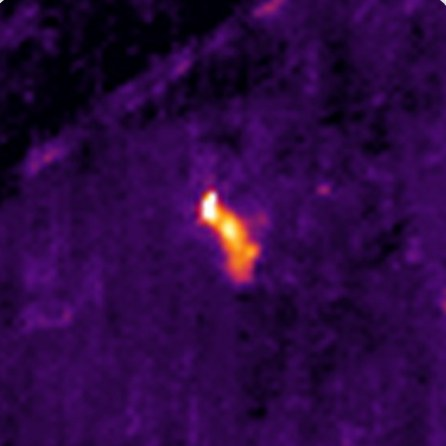
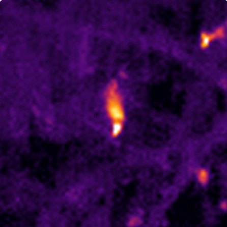
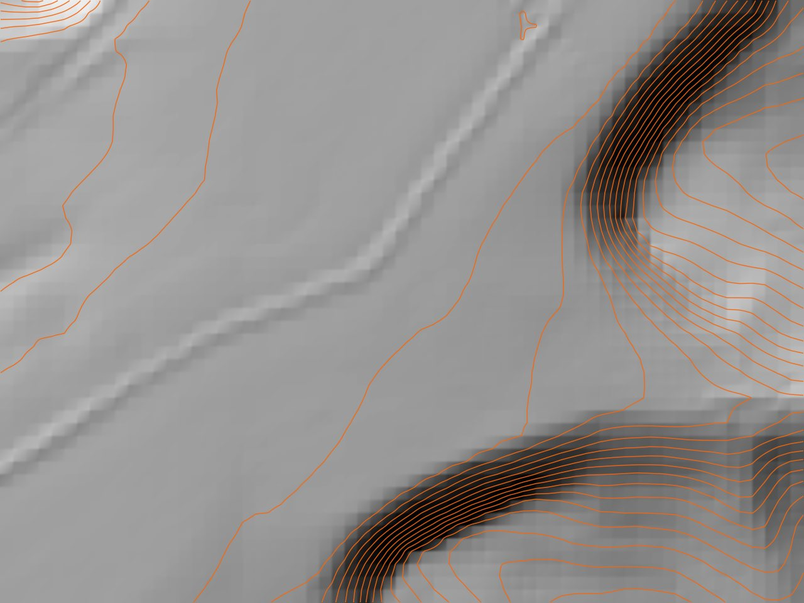
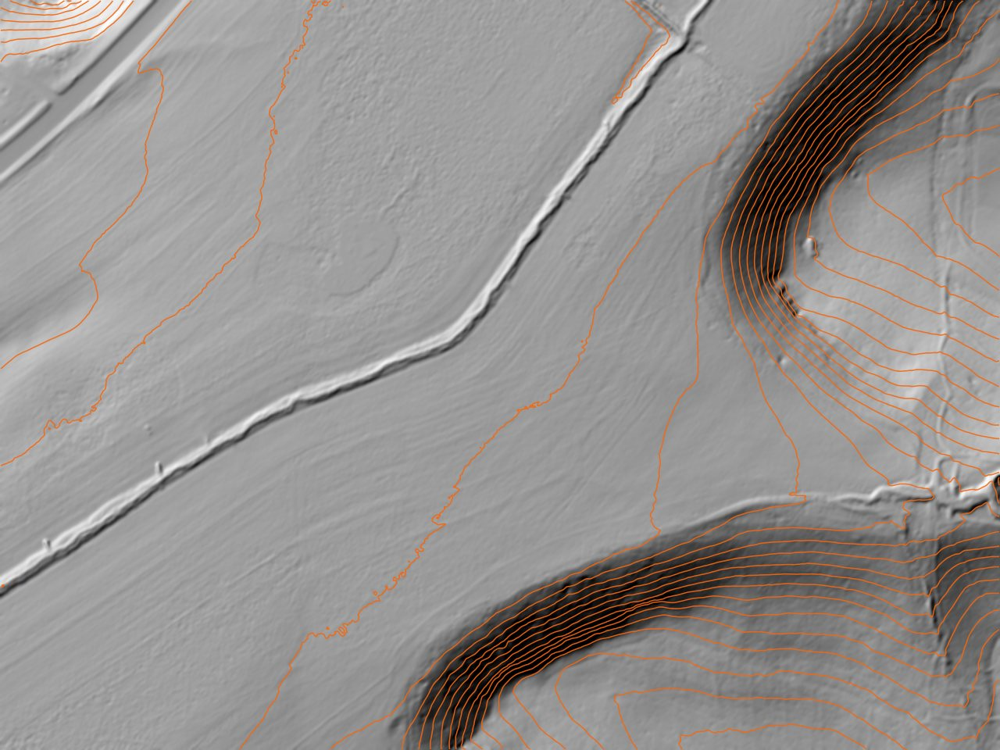
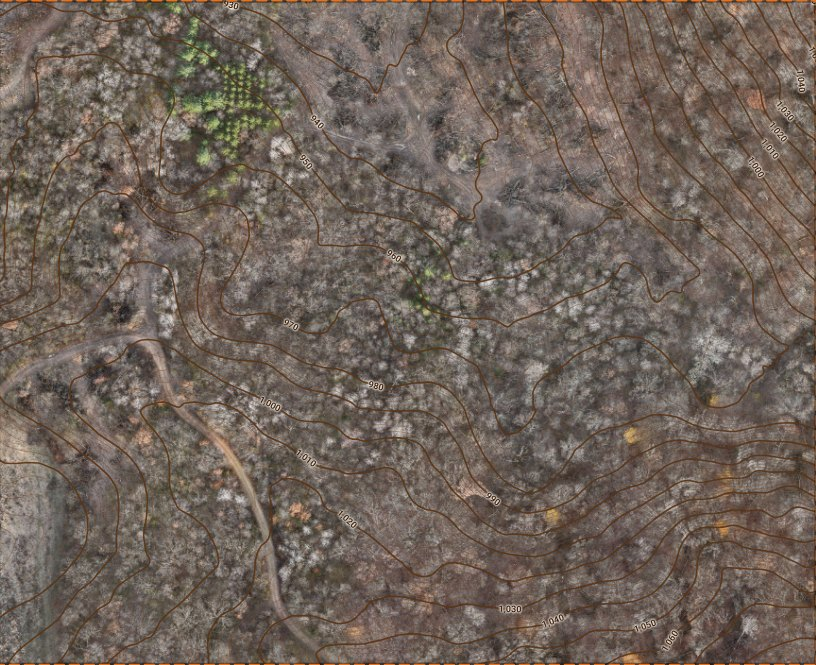
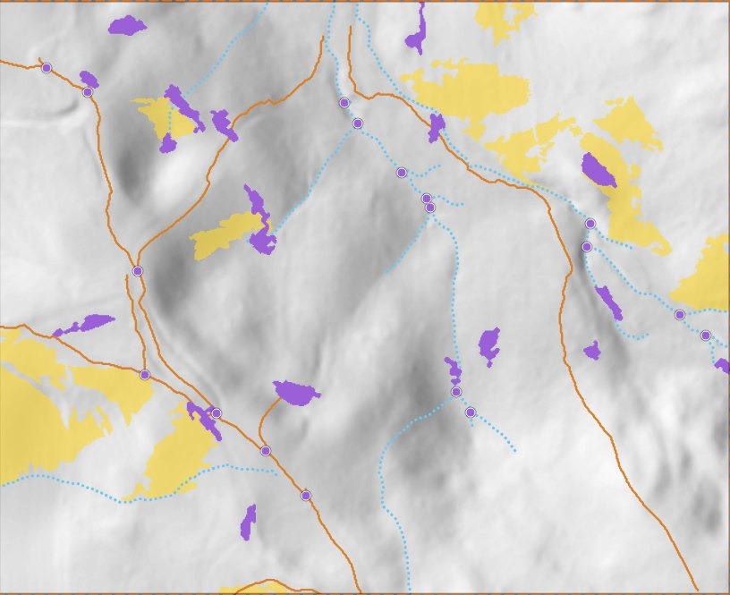

Thermal Wildlife, Terrain, and Flood Data for Southern Wisconsin Land Listings
Adam, Lexie Benson pointed me your way, so I put this page together to show you in a few minutes what I could add to a Peoples land listing, using your own Wisconsin listings as the starting point.
Peoples already covers the heart of a land sale: valuation, marketing, auctions, soils and productivity, and good drone photos and video. I'm not trying to do any of that. What I bring is a short list of measured, dated data about the ground itself, the things a recreational buyer or a bidder asks before they drive out: what uses the property at night, how the land lays under the trees, and where water sits.
The approach: a supplement to your team, not a competitor. I don't list, appraise, auction, or manage land. I fly, process, and hand your team finished files to use under Peoples' name.
The proposal: pick one listing and one question a buyer or bidder is likely to ask. I'll fly it, build one finished exhibit that answers it, and deliver the files at no cost. The Test section lays it out.
The samples on this page come from a 33-acre wooded parcel near Cross Plains that I flew on November 24, 2026.
What I need to start: one listing you choose, the seller's OK for a daytime mapping flight (plus a second flight 2 to 3 hours after dark if the exhibit is a wildlife survey), and the question you want it to answer. There's no cost to you or the seller.
Where I Fit
Alongside Your Team, Not in Its Way
Stays With Peoples
- Valuation and appraisal
- Listing, marketing, and design
- Auctions and online bidding
- Farm management
- Soils, productivity, and your client maps
- Every buyer and seller relationship
What I Add
- Night thermal wildlife surveys
- LiDAR terrain under the timber
- Flood and wetland screens
- Due diligence screens
- 3D fly-thrus
- Dated leaf-off imagery
How It Reaches Your Clients
As finished files your designers place in the listing, the brochure, the Map Binder, or the bidder packet, under Peoples' branding. Buyers keep calling your team.
Your Listings
What I Saw in Your Wisconsin Listings
Before building anything, I read six of your Wisconsin listings and one Peoples listing in Iowa, along with the Tract 1 Map Binder for #19881. Here's what stood out, and why the list below is shaped the way it is.
Photos per Listing
Mostly drone, with drone video on some. The visual side is well covered.Elevation Grid
The Map Binder contours come from the USGS 10-meter elevation model. Public LiDAR for the same ground is 1 meter.Wildlife
Hunting comes through the description, trail-cam photos, and food plots.Listings
carried a thermal survey, LiDAR terrain, a flood or wetland screen, or a 3D fly-thru.What That Means for a Peoples Listing
Peoples has the market, the buyers, and the presentation. Where I can add something is a handful of measured, dated layers about the ground: what lives on it, how it's shaped under the trees, and where water sits. Those are the questions recreational buyers and bidders ask before they drive out, and none of them asks your team to change how it works.
Read on peoplescompany.com on November 26 and 27, 2026: listings #19471, #19473, #19881, #19893, #17747, and #16484 in Wisconsin, #19965 in Iowa, and the #19881 Tract 1 Map Binder.
What I Add
Six Things I Can Add to a Peoples Listing
Thermal Wildlife Survey
A night flight with a thermal camera over the whole tract. Every deer-sized heat signature is checked by eye, then mapped as likely or possible.Where it fits:recreational listings where the hunting sells it. Repeat surveys after closing give a new owner a herd baseline.
Terrain Read From LiDAR
Bare-earth LiDAR under the canopy: 2-ft contours, shaded relief, slope, ridges, benches, draws, drainage paths, travel hubs, and canopy height.Where it fits:wooded and hunting tracts, where buyers ask how the ground lays under the timber.
Flood and Wetland Screen
FEMA flood zones, Wisconsin DNR wetlands and flood mapping, streams, ponds, and distance to water, drawn on the tract.Where it fits:buyer and bidder questions about wet ground, answered before the showing.
Due Diligence Screens
Possible build sites and driveway routes from slope, pond sites, nearby wells and DNR records, and historic topo maps of the same ground.Where it fits:homesite and transitional tracts, and the data room ahead of an auction.
3D Fly-Thru
A to-scale 3D model of the tract and a short fly-thru video built from it.Where it fits:out-of-area buyers and auction marketing, next to your drone video.
Dated Leaf-Off Imagery
A 1.5-inch, RTK-positioned orthomosaic of the tract with its flight date on it, delivered as a GeoTIFF.Where it fits:a current aerial for the brochure and Map Binder, with a date buyers can see.
Sample 1
Night Thermal Wildlife Survey

A Matrice 4T flew the whole parcel after dark on November 24, 2026, from 7:19 to 8:40 PM. Every photo was searched on its own, and every detection was confirmed by eye before it was counted.
- 7 likely sightings, 5 to 7 deerA pair at the south end and five sightings on the east side. Those five came over about five minutes and may repeat the same deer.
- 9 possible detectionsCompact warm spots where the shape couldn't be confirmed. Not counted in the 7.
- 3,345 thermal photos checkedSo a deer that moved between passes is still caught.
On a Peoples listing this becomes one gallery graphic and one brochure page, with the date on it. It's best flown leaf-off, late fall through winter.



Straight-down thermal close-ups, each about 13 ft across.
Sample 2
The Ground Under the Trees
The same hillside near Cross Plains, from the same public LiDAR, with 10-ft contours on both. On the left it's averaged to a 10-meter grid, the cell size behind the Map Binder contours. On the right it's the full 1-meter bare-earth model.


On the sample parcel, that LiDAR becomes a terrain read: ridgelines, drainage paths, benches, south-facing slopes, and travel hubs traced from the ground model, sitting under a leaf-off aerial flown the same day as the thermal survey.


Working Together
What Your Team Gets Back, and When to Call
Files for Your Designers and Mapping Team
- A print-ready PDF exhibit
- 2400 px JPG graphics for the listing gallery
- A KMZ that opens in Google Earth
- GeoTIFF, SHP, and GeoJSON for your own maps
- Short MP4 clips when there's a fly-thru
- Named by listing number and tract, in a shared folder
Good Times to Call
- A new listing needs current, dated imagery
- A tract needs flying ahead of an auction deadline
- A buyer or bidder asks about a field, access, or a homesite
- A recreational tract where the wildlife sells it
The Test
Try It on One Tract, at No Cost
Pick one listing and one question a buyer or bidder is likely to ask. I'll fly it, build one finished exhibit that answers it, and deliver the files to your team at no cost. You tell me what worked and what didn't.
- One tract you choose, flown with the seller's OK
- One buyer or bidder question the exhibit answers
- One finished exhibit plus the files, yours to use in full
- A case study only with your OK and Peoples'
If It Works
Founding Partner Terms
If this earns a place in your listings, I'd like you and your team to be a Founding Partner: priority scheduling ahead of auction deadlines, and pricing we set together after the test, based on what your team actually uses.
How It's Made
Equipment, Data, and Limits
The Flights
Flown by a Part 107 certified operator based in Cross Plains, with a DJI Matrice 4E for mapping and a Matrice 4T for thermal.The Data
Public USGS LiDAR, FEMA flood maps, and Wisconsin DNR wetland and water records, combined with the drone flights and checked against them.The Limits
Exhibits are mapping products, not a land survey, and boundaries are approximate. The mapping workflow was tested against the ASPRS accuracy standard.Questions
Questions You Might Have
Does this compete with Peoples?
No. I don't list, appraise, auction, or manage land. I fly and process data, and on a Peoples listing it goes to your team to use.
Does an exhibit replace a survey?
No. Exhibits are for marketing and buyer questions. They don't establish property lines, which stay with a licensed surveyor.
Can your designers use the files with Peoples branding?
Yes. The PDF, graphics, KMZ, and GIS files are built to drop into your own layouts, brochures, and Map Binder pages.
Do I need to give you FarmWorth or any other access?
No. I work from public data and my own flights, with the seller's permission to fly.
Why fly in late fall and winter?
With the leaves down, the aerial shows the ground under the timber, and cold nights make deer stand out clearly on thermal.
Is the deer count exact?
No. It's one night's snapshot, so treat it as a minimum. Repeat surveys show how use changes across seasons.
Next Step
Let's Pick a Tract
Fifteen minutes on the phone is enough to choose the listing and the question. Text or call whenever it suits you.